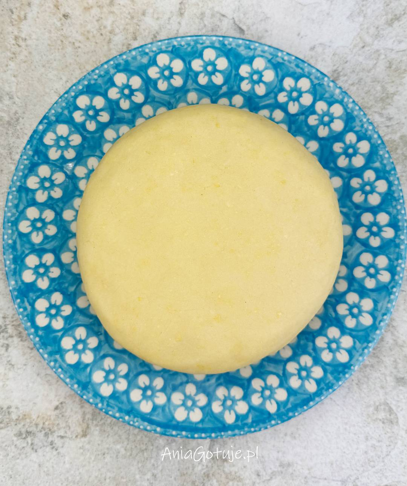
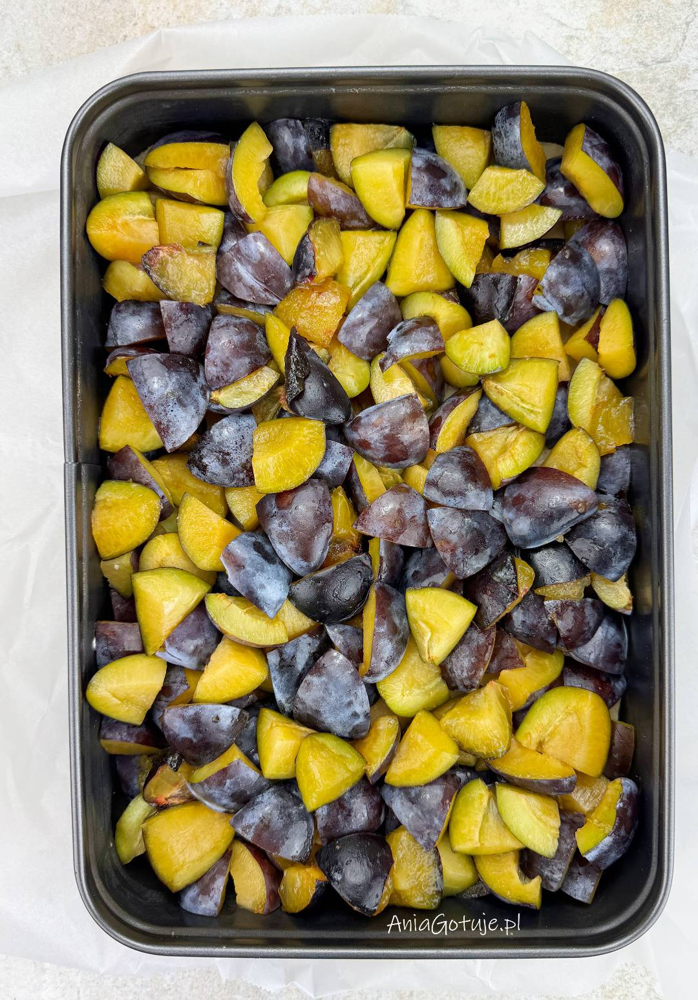
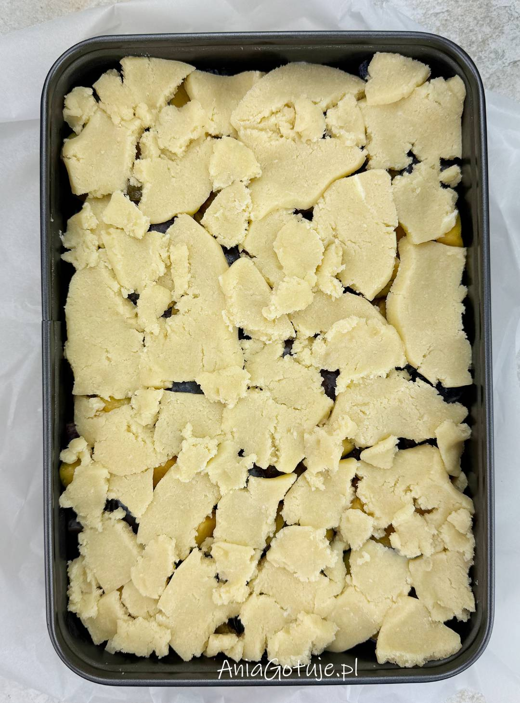
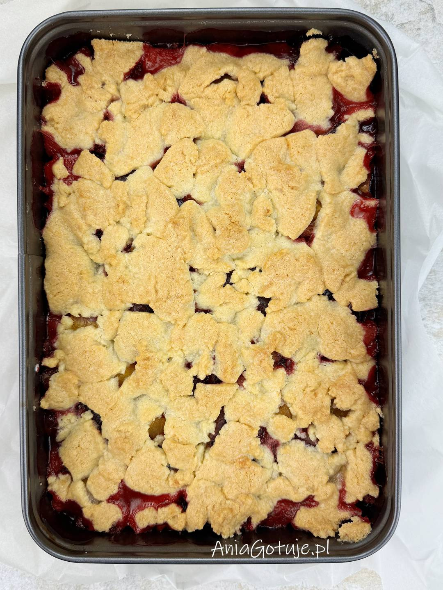
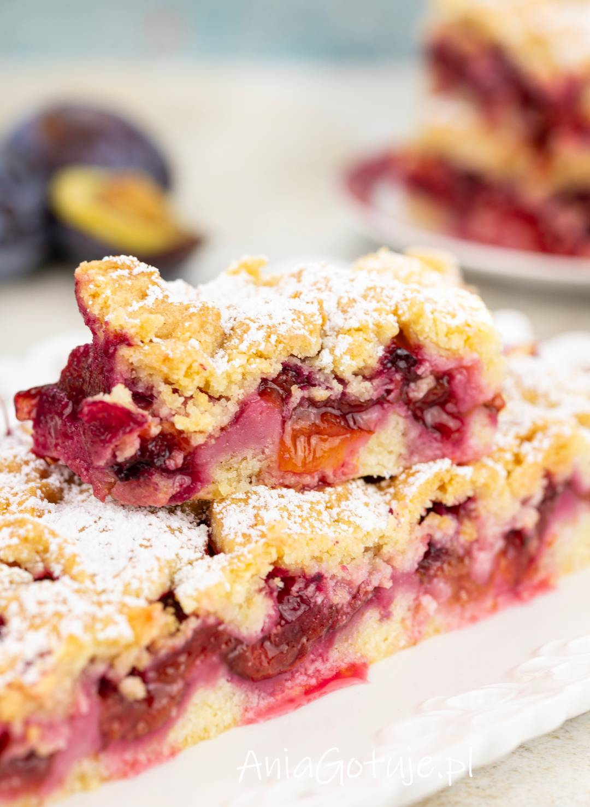

Niesamowicie pyszne, delikatne i pełne soczystych śliwek ciasto ze śliwkami to super proste ciasto kruche, które jest naprawdę wspaniałe. Zawsze wychodzi i cudownie smakuje.
Czas przygotowania: 30 minut
Czas pieczenia: 50 minut
Liczba porcji: forma do 20/30 cm - 1500 g
Krok 1: Zagnieć ciasto
W sporej misce umieść mąkę (320 gramów) wymieszaną z proszkiem (2 płaskie łyżeczki) oraz cukrem (około 100 gramów lub nieco więcej). Dodaj też jajko i pokrojone w kawałki masło (200 gramów). Całość wyrabiaj na gładkie ciasto. Ja lubię wyrabiaj ciasto dłońmi. Uformuj kulę, lekką ją spłaszcz i zawiń w folię lub umieść w woreczku. Odłóż do lodówki na 30-60 minut. Porada: Polecam cukier drobny lub cukier puder. Ciasto można sobie przygotować wieczorem i odłożyć do lodówki na całą noc.
Krok 2: Wyłóż spód i śliwki
W trakcie chłodzenia ciasta umyj śliwki. Możesz użyć dowolnej, polskiej odmiany - ważne, by były to śliwki w których dobrze odchodzi pestka. Wypestkuj je, a połówki śliwek pokrój jeszcze na 4-6 mniejszych kawałków.
Po 30 minutach wyjmij ciasto z lodówki. Podziel na dwie części. Jedną część rozwałkuj na placek trochę większy niż forma (najlepiej na obsypaną mąką blacie lub stolnicy). Możesz też nie wałkować ciasta tylko kawałek po kawałku oblepiać nim dno formy (forma o wymiarach do 20 x 30 cm). Placek przełóż do formy wyłożonej papierem do pieczenia (wystarczy dno formy). Na ciasto wyłóż kawałki śliwek i wyrównaj powierzchnię.
Krok 3: Wyłóż resztę ciasta
Resztą ciasta oblep od góry śliwki. Rwij kawałek po kawałku, lekko spłaszczaj i układaj obok siebie kawałki ciasta. Na koniec lekko wszystko uklep.
Krok 4: Upiecz ciasto
Ciasto wstaw do piekarnika nagrzanego 180 stopni góra/dół, lub 170 stopni z termoobiegiem. Piecz je 50 minut. Ciasto można wyjmować z piekarnika od razu po upieczeniu. Jeszcze gorące ciasto nie jest stabilne i trudniej się je kroi. Po schłodzeniu w lodówce kroi się idealnie a śliwki i powstały sok świetnie łączą się z ciastem.
Kruche ciasto ze śliwkami wystarczy oprószyć przed podaniem cukrem pudrem lub cukrem z odrobiną cynamonu. Świetnie smakuje podane z mlecznymi lodami. Do jednej doby ciasto można trzymać w chłodnej szafce kuchennej. Jeśli jednak ma być przechowywane dłużej, to zalecam umieścić je w lodówce pod przykryciem. Świeżość zachowa przynajmniej przez 3-4 dni. Najlepsze jest jednak w ciągu pierwszej doby od upieczenia.
